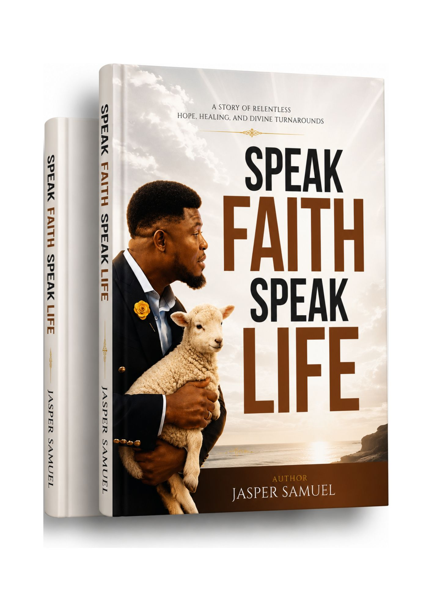
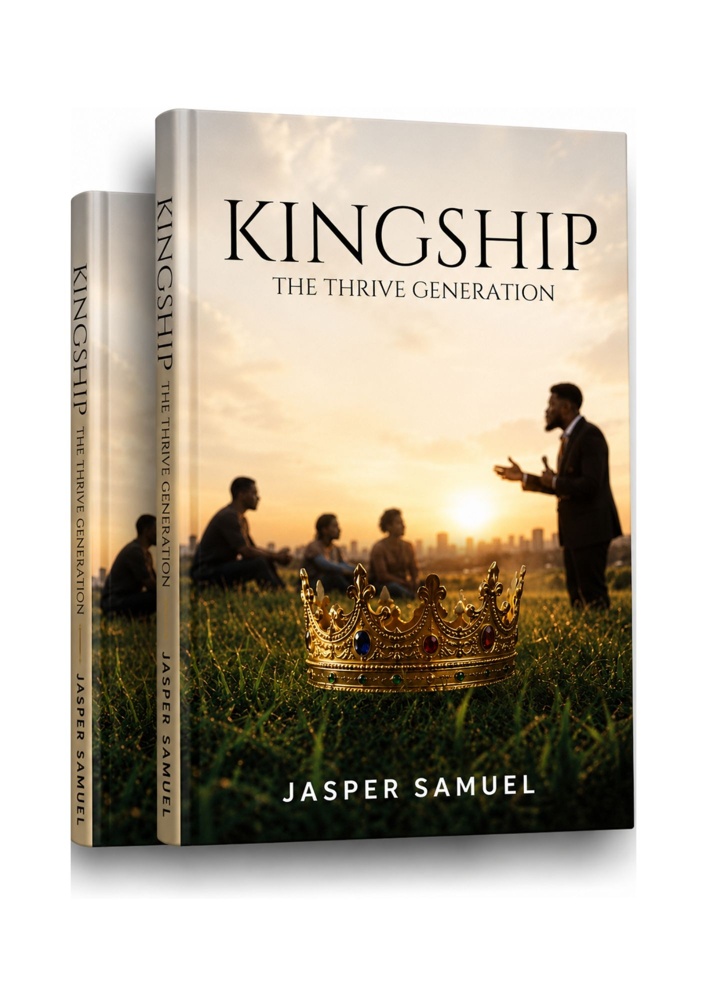
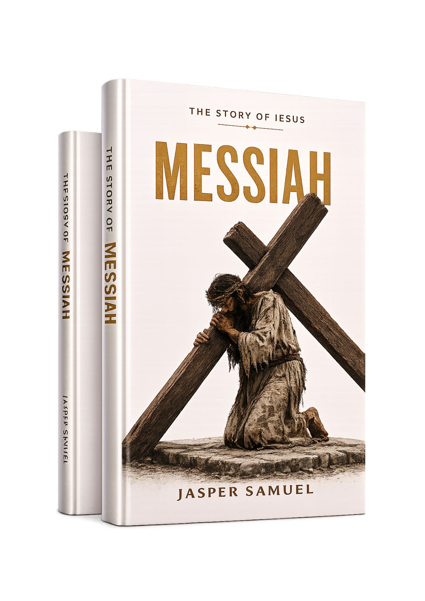
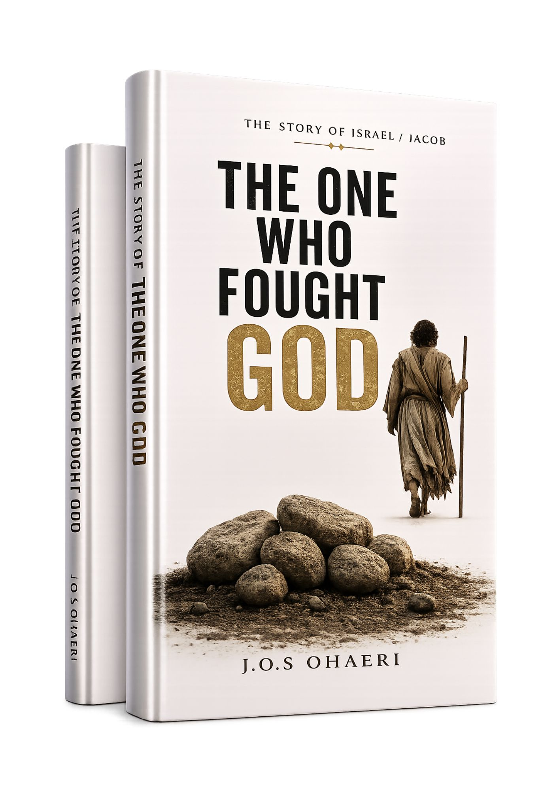
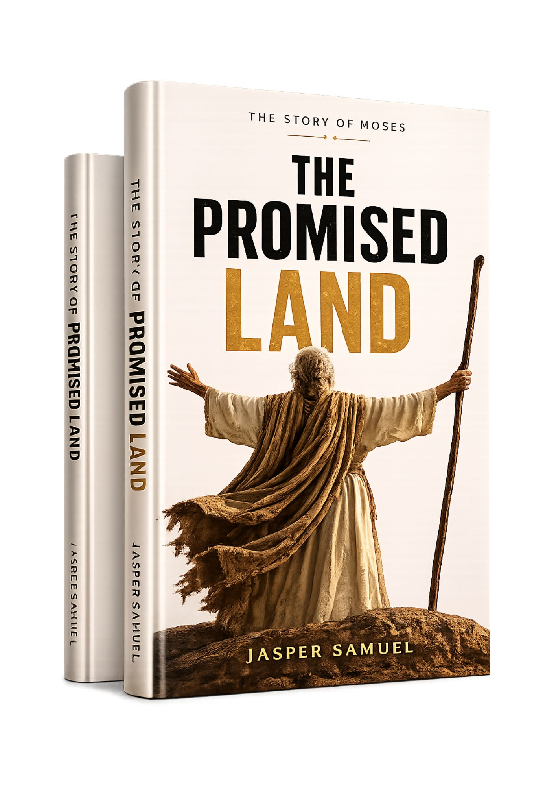
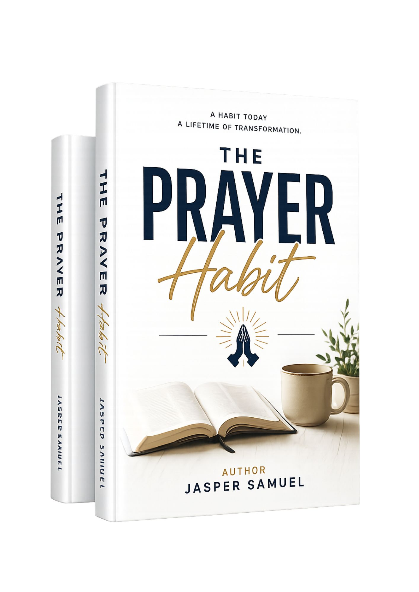
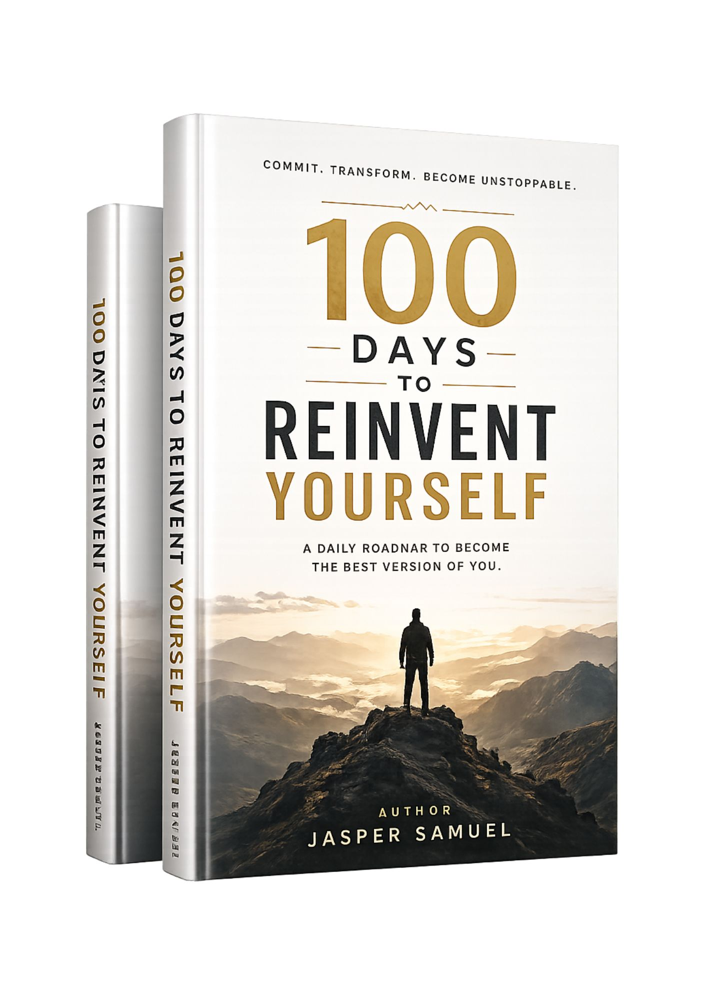
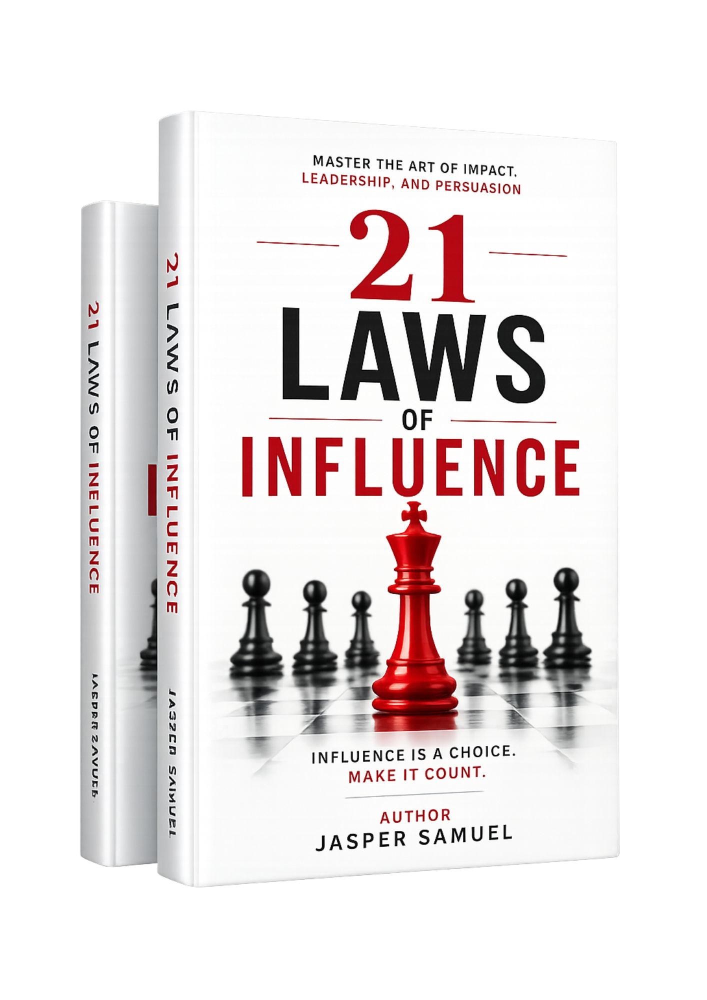
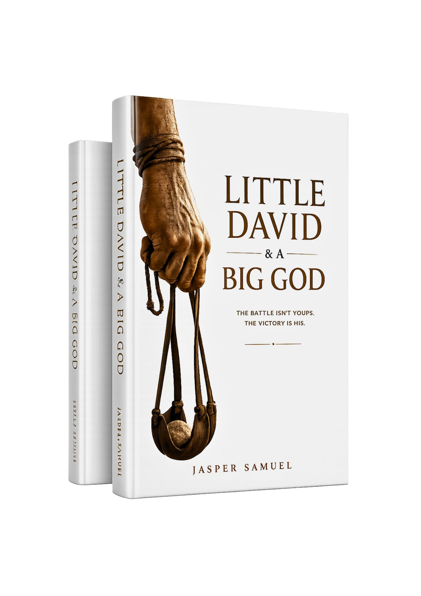

Thrive In Two
Move beyond merely managing a relationship and learn practical ways to strengthen communication, trust, emotional connection and covenant love.
Enquire About BookFaith · Wisdom · Transformation
Practical, spiritually grounded writing for emotional healing, strong relationships, purposeful leadership and a deeper walk with God.
Choose a title below and send a direct enquiry to the ministry team for availability, formats and ordering information.
Move beyond merely managing a relationship and learn practical ways to strengthen communication, trust, emotional connection and covenant love.
Enquire About BookA resilience guide for seasons when pressure, circumstances and expectations say that failure is inevitable.
Enquire About BookA compassionate final intervention for couples facing silence, conflict, exhaustion and the possibility of separation.
Enquire About Book
Explore the biblical power of words and learn to speak with faith, wisdom, responsibility and life-giving intention.
Enquire About Book
A doctrinal and practical framework for applying biblical truth to identity, family, leadership, work and modern life.
Enquire About BookLearn to discern delay, remain faithful through uncertainty and grow in the seasons when answers do not arrive quickly.
Enquire About BookA journey into discipleship, obedience, transformation and what it means to walk with God in everyday life.
Enquire About Book
A reflective exploration of the life, sacrifice, suffering and redemptive mission of Jesus Christ.
Enquire About Book
Lessons from Job on pain, endurance, loss, unanswered questions and unwavering trust in God.
Enquire About Book
Follow Moses from insecurity to leadership and discover how God uses imperfect people for extraordinary assignments.
Enquire About Book
Develop consistency, intimacy with God, spiritual discipline and a prayer life that extends beyond emergencies.
Enquire About Book
A practical challenge to break unhealthy cycles, renew the mind, rebuild confidence and embrace purposeful change.
Enquire About Book
Principles for character, communication, persuasion, leadership and building meaningful impact.
Enquire About Book
An encouraging story for younger readers about courage, faith, obedience and trusting God when facing giants.
Enquire About BookAvailability and ordering information may differ by title. Use the enquiry button on the book you are interested in and the ministry team will assist you.
Faith-based guidance for confronting wounds, restoring inner stability and pursuing wholeness.
Practical tools for trust, communication, covenant, family and relational restoration.
Prayer, discipleship, biblical identity, obedience and an increasingly mature walk with God.
Character, discipline, influence, stewardship and kingdom-minded decision-making.
Tell the ministry team what season of life you are navigating and ask for a suitable recommendation.
Ask for a Recommendation